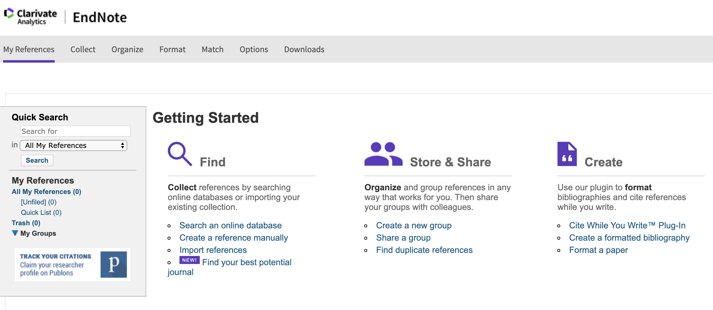
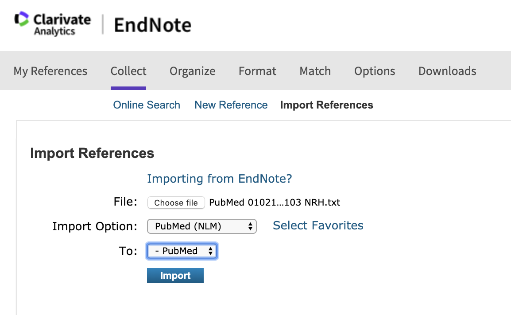
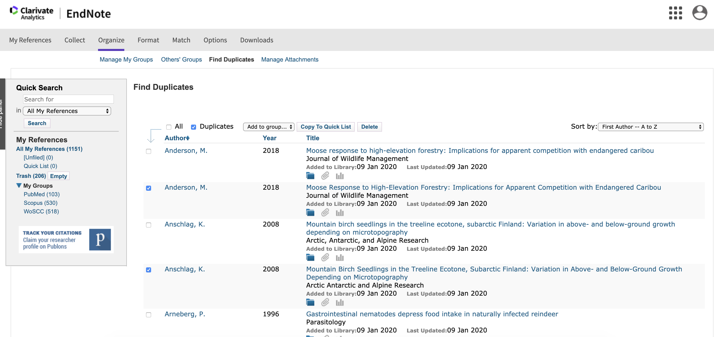
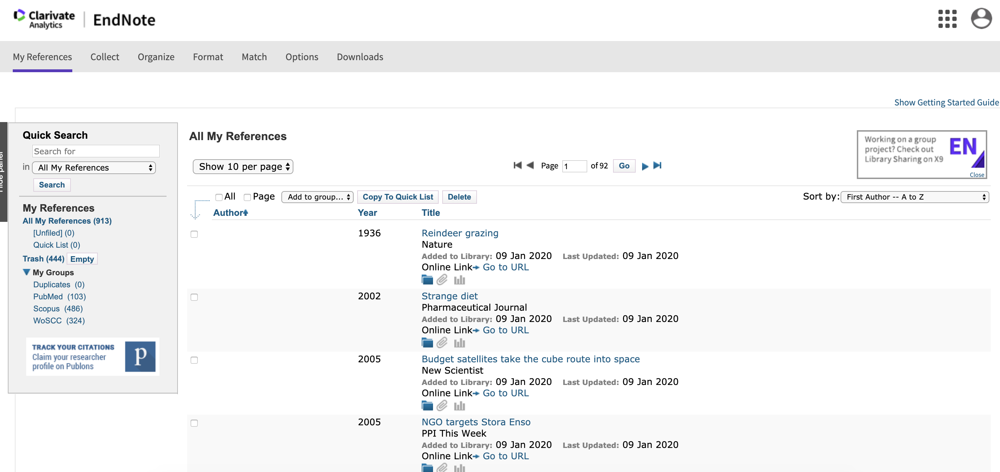

6. Assembling a library of evidence and review management software
This session will outline what comes after searches have been performed: assembling a database of potentially relevant evidence that must be screened by reviewers. The session will also introduce review management software, and in a practical session attendees will create a review in EndNote Online and will import and combine their search results.
Learning objectives:
- To appreciate the importance of review management software and learn how to use the free reference management software EndNote Online
- To understand how to combine search results into one database
- To understand ways to remove duplicated citations from search results
To begin, watch the following presentation:
You can find the lecture handouts here.
Next, read this article about review management tools and the free tool, CADIMA.
If you're interested in learning more about different systematic review management tools, check out the following webinars:
Practical exercise
In this practical exercise, you will use the free reference management software EndNote Online to manage some search results and remove duplicates. EndNote Online is a tool for working with references and handling citations in documents. Although it hasn't been designed with systematic reviews in mind (and has some important restrictions), the fact that it is free and integrates well with EndNote means that it may be an attractive option. In later practical exercises, you will gain experience of other review management tools specifically designed for systematic reviews.
To begin with, log in/sign up with EndNote Online here.
Once you're logged in, you should see an empty library like this:
If you already have records in your EndNote Online account that you don't want to lose, you may want to sign up with a different email account for this exercise.
For this exercise, you will use some search results that were obtained from a recent systematic review investigating the impacts of reindeer on alpine vegetation in the Arctic. The reviewers searched a number of bibliographic databases using the following search: (reindeer OR caribou OR Rangifer) AND (herbivory OR graz* OR brows* OR trampl*).
Your task is to upload the exported search results to an EndNote Online library, remove duplicates, and gain some experience of keeping detailed records for a library of search results.
- Download the search results files - visit this link to a Figshare archive containing results from searches in Web of Science Core Collections, PubMed and Scopus: doi.org/10.6084/m9.figshare.7660391
- Import reference files to your EndNote Library - Click on 'Collect>Import References', and then import each file using the following 'Import Options' settings: i) PubMed - PubMed (NLM); ii) Scopus - Refman RIS; iii) Web of Science Core Collections - EndNote Import. Import each file into a new folder to more easily keep track of the records. You'll be able to tell if the import has been successful, because the number of records imported will be displayed in red text. Web of Science Core Collections results need to be exported in chunks of 500, which is why there are two separate files (these can be imported into a single folder on EndNote Online). 
- Remove duplicates - Click on 'Organize>Find Duplicates'. You'll be shown a list of all articles that EndNote thinks are duplicates, with the duplicated records preselected (tick marks). 
- Record duplicates - Save the selected duplicates to a new group (call it 'Duplicates', perhaps), by clicking 'Add to group...>New group'. This will keep a record of which references you will later remove. You can download this list of duplicates by clicking on 'Format>Export references' and selecting your duplicates group. Refman (RIS) export style is probably the most universally useful. After this, you can navigate back to your duplicates group and delete the included references to leave only unique records.
You should end up with 913 unique records, organised across three groups according to their source.
So that's it - you've now learned the basics of how to import records, remove duplicates, and generate a clean library of evidence ready for relevance screening.
Move to the next module!